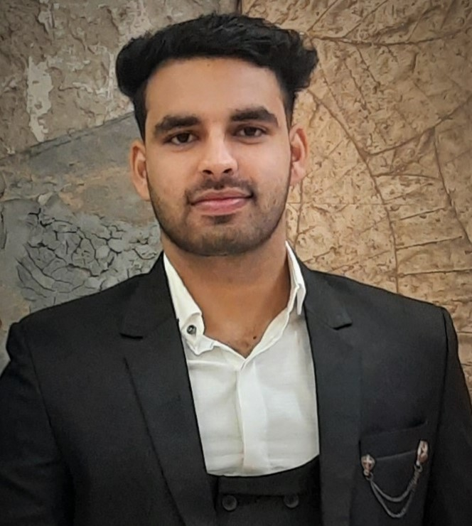

Sushobhit Gautam
Masani road, Mathura 281003
sushobhit.gautam_cs20@gla.ac.in
9991169587
Interests
- Data Structures
- Programming
- Reasoning
- Travelling
Skills
Technical
- Good expertise in front end web development and making website projects
- For solving the problems, I learned DSA by java
Professional
- Time management
- Problem solving skills
- Leadership skills
Education
- Bachelor of Technology, GLA University, Mathura 2020-2024
- Intermediate, Sanjay Public School, Mathura 2019-2020
- High School, Sanjay Public School, Mathura 2017-2018
InternshipExperience
Jovac Course, GLA University
- Prepared websites and web project in Front End Web development course
- Created a personal portfolio website which having all skills and qualification of an employee
Udemy course
- Online platform for learning Full Stack web development framework React JS inhances UI’s of websites
- Published on the project of online working Calculator interface.
Achievements
- Certification of JOVAC Web Development bootcamp.
- Completion Certificate of Udemy Full Stack development
- Certification of Responsive Web Development with HTML,CSS and Javascript of Infosys Springboard
Extracurriculars
- Participated in AAGAAZ-PRAYAS (Yoga competition, GLA)
- Coordinated SRIJAN (Cultural Fest, GLA)
- Attended seminar of Leadership Sutras from Bhagavad Gita